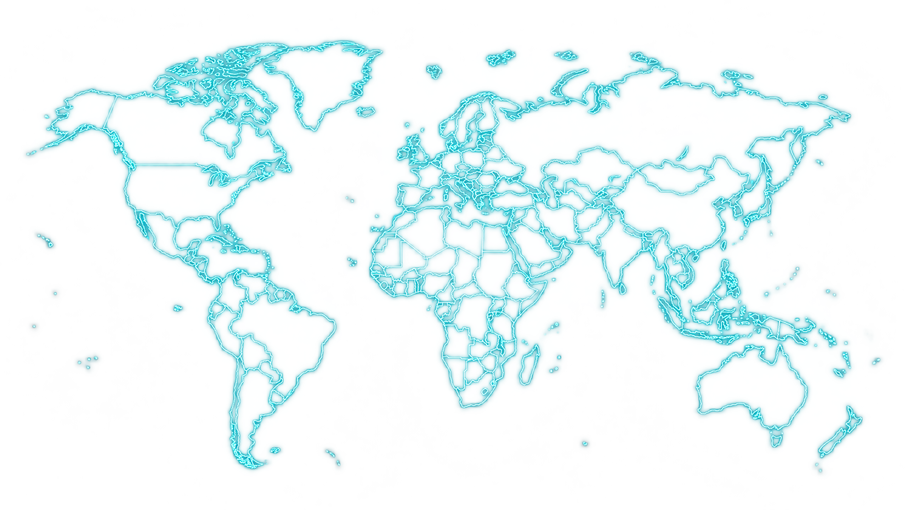

01EM FOCO
Instituições em diálogo.
[ 01 — 05 ]Organismos internacionais ajudam países a negociar problemas comuns — da paz e saúde às regras do comércio e aos acordos regionais.
Escolha uma camada. Encontre as relações que desenham o nosso mundo.

Organismos internacionais ajudam países a negociar problemas comuns — da paz e saúde às regras do comércio e aos acordos regionais.